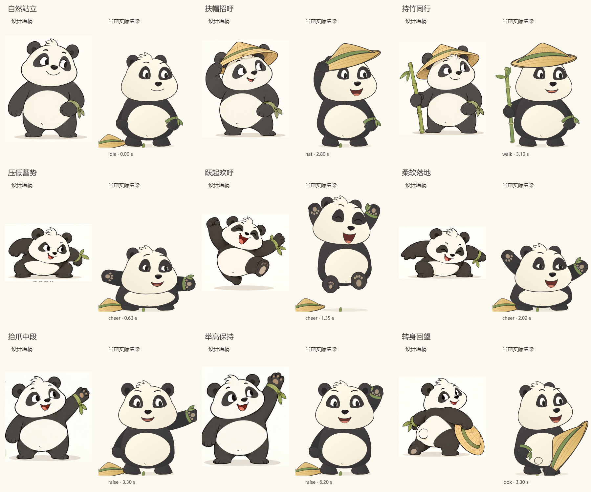
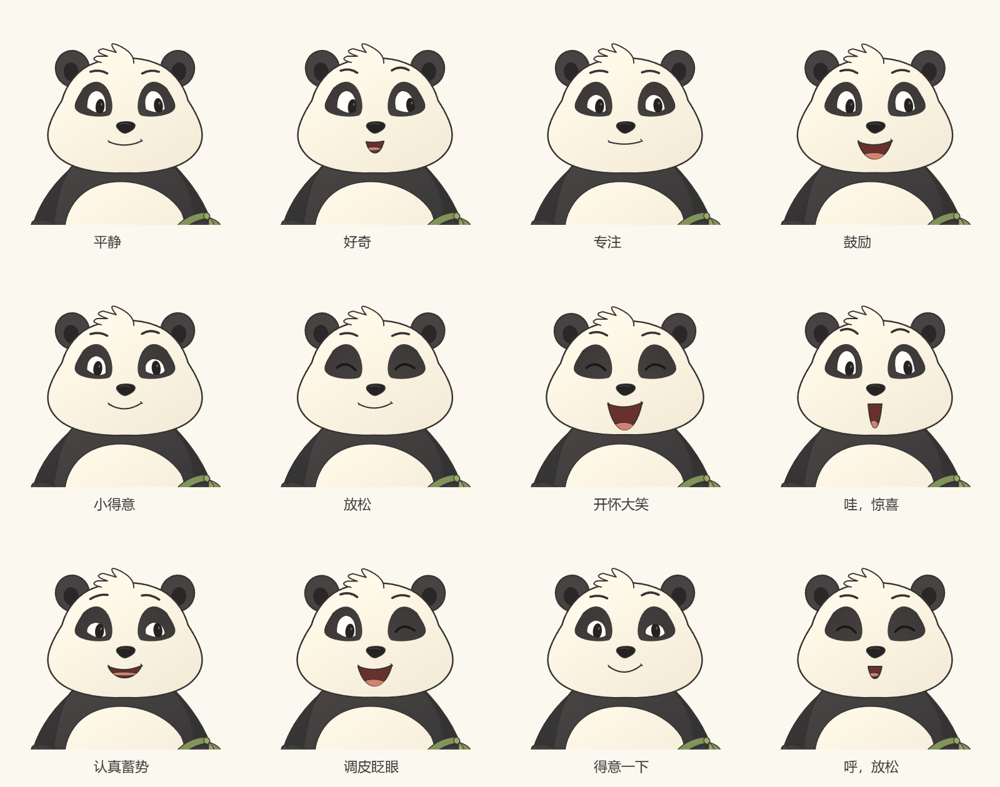
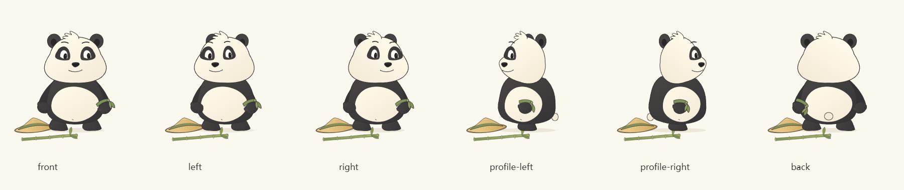
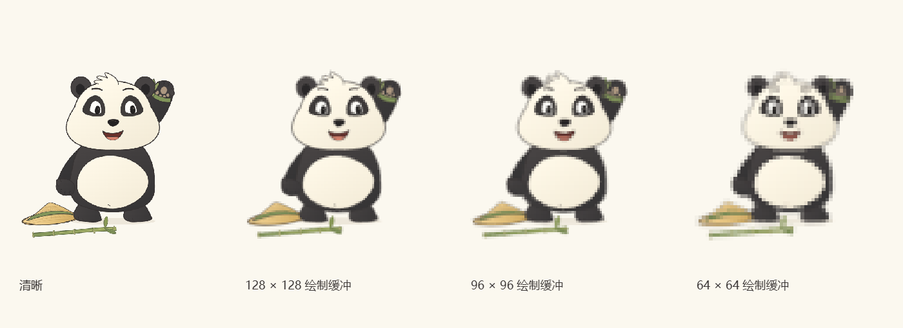

七张原图完整导入，运行角色以可编辑曲线重新制作。这里展示本轮实际角色、正常速度录像与原稿对照，方便直接检查形象和动作。
只录角色，未开启摄像头。可用播放器暂停或拖动；默认播放速度为正常速度。
每组左侧是交付包设计原图的局部，右侧是当前渲染器绘制的对应动作。两侧均等比显示；场景边缘作了裁切。点击可看原尺寸。




这里比较相同帧的 600、128、96、64 像素缓冲。粗像素会损失眼神与腕结细节；项目内三档颗粒随实际显示尺寸调整。
23 项动作与映射检查、46 项镜像会话检查、15 组浏览器检查，以及 TypeScript 和独立生产构建通过。七张导入原图与交付包逐字节一致；训练存储等十个外围基线文件未改。
真人摄像头、真人遮挡恢复、端到端跟随延迟和物理手机未测。所有镜像软件检查使用合成输入和故障注入。新运行版的形象与美感仍以实际审看为准。